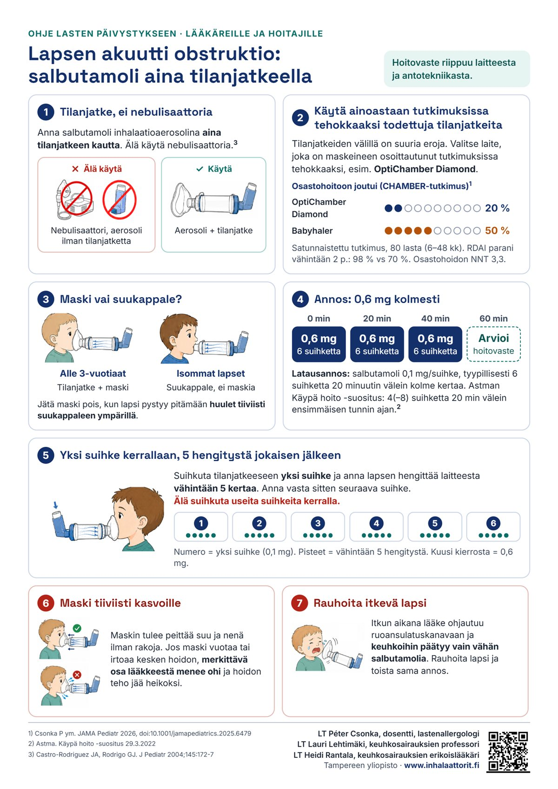

Akuutin obstruktion hoito lapsilla
Tulostettava A4-ohje lasten päivystykseen lääkäreille ja hoitajille. Ohje on tarkoitettu tulostettavaksi yksikön seinälle.

Tulostettava A4-ohje lasten päivystykseen lääkäreille ja hoitajille. Ohje on tarkoitettu tulostettavaksi yksikön seinälle.

Utskrivbar A4-anvisning för läkare och skötare på barnjouren. Anvisningen är avsedd att skrivas ut och sättas upp på enhetens vägg.
Anvisningen finns för närvarande endast på finska.